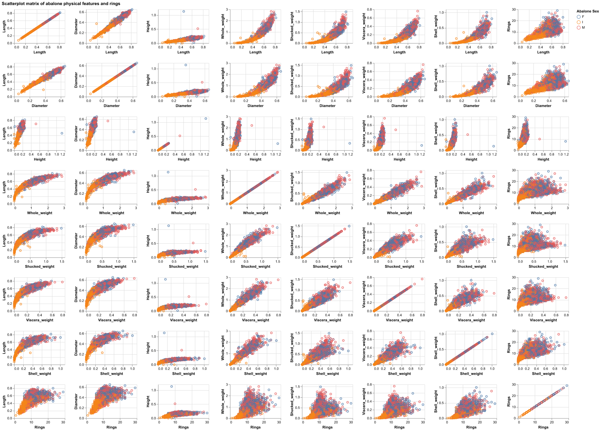
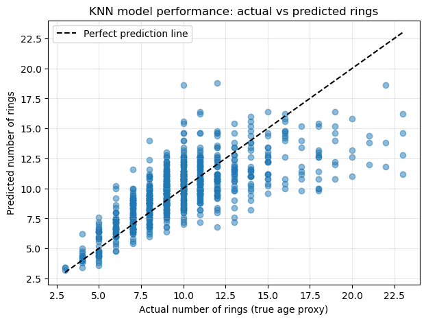

| Dataset | RMSE | |
|---|---|---|
| 0 | Train | 1.863 |
| 1 | Test | 2.288 |
Abalone Age Prediction based on Physical Measurements and Sex
1. Summary
In this project, we aimed to build a regression model using the k-Nearest Neighbours (k-NN) algorithm to predict the age of an abalone using its physical characteristics and sex. Because determining abalone age traditionally requires cutting the shell and counting internal rings—a destructive and time-consuming process—machine learning methods offer a valuable non-destructive alternative for estimating age from easily measurable features. In the dataset used here, age is represented as Rings + 1.5, where the additional 1.5 years accounts for early developmental stages. For example, an abalone with 10 rings would be approximately 11.5 years old.
Our fitted k-NN regressor (with k = 5) achieved a training RMSE of 1.86 and a test RMSE of 2.29 rings. This means that on unseen data, the model’s predictions typically deviate from the true age by about 2.29 rings. The Figure 2 comparing actual and predicted ring counts shows a generally increasing trend, but also substantial spread—especially among older abalones. This suggests that while k-NN captures the broad relationship between size and age, predicting exact age remains difficult due to biological variability and overlapping physical measurements. Still, the results demonstrate that physical features contain meaningful information about abalone age, and performance could likely improve with hyperparameter tuning or more advanced models.
Estimating abalone age is important for marine biology research, sustainable fisheries management, and conservation efforts, yet the traditional ring-counting method is destructive and impractical at scale. A predictive model provides a non-invasive alternative, enabling age estimation for live animals in the field. However, its accuracy is limited by natural growth variability and nonlinear developmental patterns, particularly in older individuals. As a result, while machine learning can support broader age-structure assessments and population monitoring, it may not fully replace precise biological aging methods in contexts where exact age determination is required.
2. Introduction
2.1 Project Goal:
The goal of this project is to investigate whether physical features and sex can accurately predict the age of an abalone.
2.2 Background:
Abalones are marine molluscs that are widely harvested for food and shell products. Understanding their age structure is crucial for fisheries management and conservation planning (Nash et al. 1994). However, determining age is not straightforward: the most accurate method requires cutting the shell and counting internal rings under a microscope, which is destructive, labour-intensive, and not feasible at scale for monitoring wild populations.
The Abalone dataset from the UCI Machine Learning Repository (Dua and Graff 1995) provides measurements of physical characteristics including:
Categorical: sex (M, F, I)
Continuous: length, diameter, height, whole weight, shucked weight, viscera weight, shell weight
The dataset contains 4177 observations and 8 predictor variables, providing a reasonably large sample for training and evaluating regression models. Age is recorded via the Rings variable, with age in years calculated as Rings + 1.5. Because Rings is numeric, predicting age is naturally formulated as a regression problem. Using these non-destructive measurements to estimate age could support more sustainable management and research.
3. Methods
3.1 Data and preprocessing
Data were downloaded from the UCI repository (Dua and Graff 1995) and validated using a pandera schema to check column types, allowed categories for Sex, value ranges, missingness, and duplicate rows. Next, exploratory data analysis (EDA) is performed using the validated dataset. This helped to understand the relationships between physical measurements and age and check for nonlinear patterns and outliers.
Before fitting the model, we performed several preprocessing steps to ensure data quality and suitability for machine learning. We first applied one-hot encoding to the Sex variable to convert it into numeric indicator features. Next, we split the dataset into an 80% training set and a 20% test set to allow for an unbiased evaluation of model performance. Finally, we used deepchecks to examine potential data issues, including feature–label correlations, feature–feature correlations, and label drift between the training and test sets. These checks helped confirm that our features were appropriate for modeling and that no major distribution shifts existed between the training and evaluation data. Highly correlated weight-related features were expected due to shared biological growth processes, and the checks confirmed that there were no severe issues beyond this expected multicollinearity.
3.2 Model Selection
We used a k-nearest neighbours (k-NN) regressor to predict abalone age from physical measurements and sex. For any new abalone, the model identifies the k most similar individuals in the standardized feature space, based on Euclidean distance, and predicts age by averaging the number of rings among those neighbours. We selected k-NN because it is a non-parametric and flexible method that makes no strong assumptions about linearity, offers intuitive predictions grounded in similarity to known examples, and is well suited to capturing the nonlinear relationships between size, weight, sex, and age observed in abalone growth patterns (Waugh 1995).
3.3 Model Evaluation
Model performance is assessed, which loads the saved k-NN model and scaler, applies them to the training and test sets, and computes the RMSE for both splits. The script also generates an actual-versus-predicted plot for the test set (Figure 2). RMSE is an appropriate evaluation metric because the target variable, Rings, is continuous, and the metric penalizes larger errors more severely, making it well suited for age-estimation tasks where extreme mispredictions are particularly undesirabl
4. Results
4.1 Exploratory Data Analysis
Figure 1 summarizes how each physical measurement relates to the number of rings, which serves as a proxy for abalone age. In general, positive associations are observed across most predictors, indicating that larger and heavier abalones tend to have more rings. The observed patterns are nonlinear, with growth appearing faster in younger abalones and gradually slowing for older ones. This widening spread suggests that abalones with similar sizes can still vary considerably in age. Weight-based variables show particularly strong correlations with age, while height appears to be the least informative due to its very narrow range.
Across all measurements, the three sex categories overlap substantially, indicating that sex alone does not form clear separations in age patterns. Because of this, sex is unlikely to serve as a strong individual predictor at this stage, although it is still included as a categorical feature for completeness.

4.2 Model Performance
To evaluate whether physical characteristics can predict age, we trained a k-Nearest Neighbours regression model (k = 5) using scaled predictors. Figure 2 shows the relationship between actual and predicted ring counts on the test set. The dashed line represents perfect prediction. While the model captures the general increasing trend, there is considerable spread, especially for older abalones. This indicates that predictions become less reliable as age increases, which is consistent with the biological variability seen in the EDA.

Model accuracy is summarized using RMSE, with a training RMSE of 1.86 and a test RMSE of 2.29. These values are reported in Table 1, which compares model performance on the training and test sets. Given that abalone age in years is calculated as Rings + 1.5, a test RMSE of 2.29 rings implies that the model typically predicts age with an error of roughly 2.29 years. This level of accuracy is reasonable for a simple, non-parametric model and suggests that physical features provide useful—but imperfect—information about age.
5. Discussion
The EDA and modelling results indicate that abalone age is broadly reflected in its size and weight, although substantial natural variability and nonlinear growth patterns limit prediction accuracy. The widening spread in Figure 2, along with the moderate RMSE scores, suggests that physical measurements become weaker indicators of age as abalones grow older.
From a fisheries and conservation standpoint, the model is still valuable because it enables non-destructive age estimation from easily collected measurements. This makes it useful for population-level assessments where approximate age ranges are sufficient. However, the prediction error of roughly two rings may be too large for fine-grained applications, such as distinguishing between neighbouring age classes for precise stock assessments.
Several assumptions and limitations must also be acknowledged. The model assumes that the abalone dataset (Dua and Graff 1995) is representative of real-world populations, even though abalone growth varies across different habitats and environments. Many weight-based predictors are highly correlated, which is biologically expected but can make distance-based methods like k-NN sensitive to small measurement fluctuations. Additionally, k-NN cannot extrapolate beyond observed data and performs best when the training feature space is densely populated (Clark, Schreter, and Adams 1996).
Future work could include tuning the hyperparameters of the model, such as the value of k and the choice of distance metric, exploring more expressive models like random forests or gradient boosting, and engineering new features that capture biological growth ratios or nonlinear interactions. Methods that explicitly model the nonlinear relationship between age and physical size may also improve predictive performance.
Overall, the current k-NN model provides a reasonable baseline and demonstrates that physical measurements contain meaningful information about abalone age. However, additional modelling, feature engineering, and validation are needed before the model could be applied reliably in operational or management settings.
6. References:
Clark, D., Z. Schreter, and A. Adams. 1996. “A Quantitative Comparison of Dystal and Backpropagation.” In Proceedings of the Australian Conference on Neural Networks (ACNN’96).
Dua, Dheeru, and Casey Graff. 1995. “Abalone Data Set.” UCI Machine Learning Repository. https://archive.ics.uci.edu/dataset/1/abalone.
Nash, W. J., T. L. Sellers, S. R. Talbot, A. J. Cawthorn, and W. B. Ford. 1994. “The Population Biology of Abalone (Haliotis Species) in Tasmania. I. Blacklip Abalone (h. Rubra) from the North Coast and Islands of Bass Strait.” Technical Report No. 48. Sea Fisheries Division.
Waugh, S. 1995. “Extending and Benchmarking Cascade-Correlation.” PhD thesis, Department of Computer Science, University of Tasmania.